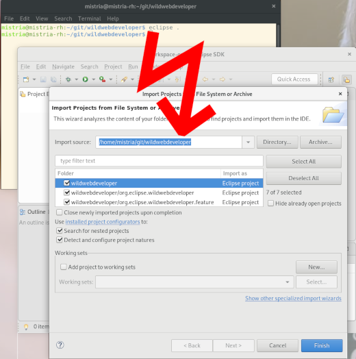

Views, Dialogs and Wizards
eclipse . or eclipse ~/git/eclipse.platform.ui),
the generic "smart" Import projects wizard is shown and suggests a plan to import the project into the workspace.

Ctrl+3 shortcut) you can now
directly launch any of the Run or Debug configuration available in your workspace.

Note: for performance reason, the extra Quick Access entries are only visible if the org.eclipse.debug.ui
bundle was already activated by some previous action in the workbench (like editing some launch configuration, or expanding the
Run As... menus).
Themes and Styling
setLinesVisible(true) is set.
Earlier they had a gray background even if line visibility was true.
Example of a Tree and Table in Eclipse with alternating dark lines in the background:

Compare the old version at the top and the new version at the bottom: